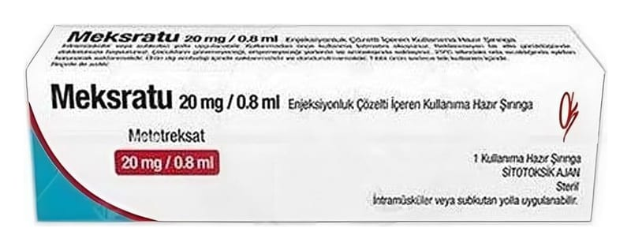

Meksratu 20 mg/0.8 ml Enjeksiyonluk Çözelti İçeren Kullanıma Hazır Şırınga

Ne için kullanılır
KT · Bölüm 1• MEKSRATU, etken madde olarak metotreksat içerir. • Kutuda enjeksiyonluk solüsyon içeren kullanıma hazır 1 adet şırınga olarak sunulur.
Metotreksat, aşağıdaki özelliklere sahip olan bir maddedir: • Vücuttaki bazı hücrelerin hızlı şekilde çoğalmasını engeller. • Bağışıklık sisteminin (vücudun kendini savunma mekanizması) etkinliğini azaltır. • Antiinflamatuvar etkilere sahiptir.
MEKSRATU aşağıdaki hastalıkların tedavisi için endikedir: • Yetişkin hastalardaki a ktif r omatoid artritte (inflamatuar eklem hastalığ ı) • Steroid olmayan antiinflamatuvar ilaçlara cevabın yetersiz olduğu aktif juvenil idiopatik artritin (JİA) (kronik eklem iltihabı) poliartritik for mları • Orta ve şiddetli psöriazis (sede f hastalığ ı) ve aktif psöriatik artritte (sedef hastalarında görülen eklem iltihabı) • Orta şiddetli steroide bağlımlı Crohn hastalığı (sindirim kanalının iltihabi bir hastalığı) olan yetişkinlerde steroidler ile kombine tedavide
Sayfa 2 / 12
• Monoterapi olarak metotreksata cevap veren yetişkinlerde Crohn hastalığının devam tedavisinde endikedir.
Romatoid artrit (inflamatuar eklem şişliği), sinoviyel zarların (ekl em zarları) iltihabı ile karakterize kr onik kollajen hastalıktı r (süregelen bağ doku hastalığı). Bu zarlar birçok eklem için ka yga nl aştırıcı gör evi gören bir sıvı üretmektedir. İltihap, zarların kalınlaşmasına ve eklemin şişmesine nede n olmaktadır.
Juvenil artrit, 16 yaşından küçük çocuklarda görülen bir hastalıktır. Hastalığın ilk 6 ayı içinde 5 ya da d aha f azla e klem etkilenirse poliartritik for m belirir.
Psöriatik artrit cilt ve tırna klarda , öz ellikle de el ve ayak parmağı eklemlerinde psoriatik lezyonlar gösteren bir a rtrit (eklem iltihabı) tipidir.
Psöriazis kalın, kuru, gümüşümsü, yapışkan kabuklarla kaplı kırmızı yamalarla karakterize sıklıkla karşılaşılan kr onik bir cilt ha stalığ ıdır.
MEKSRATU hastalığ ın gelişimini değiştirir ve y avaşlatır .
Crohn hastalığı, karın ağrısı, ishal, kusma veya kilo kaybı gibi belirtilere neden olarak gastrointestinal sistemin herhangi bir bölümünü etkileyebilecek bir tür iltihabi bağırsak hastalığıdır.